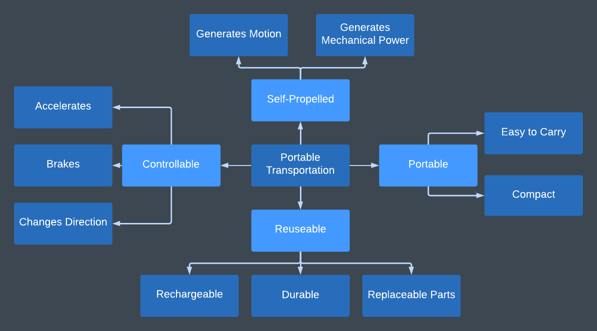
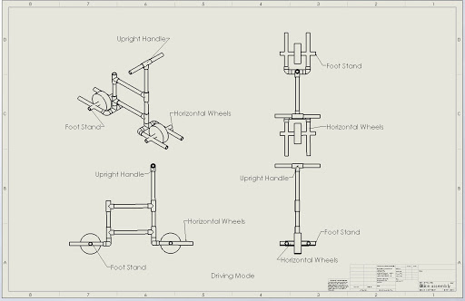

01 THE PROBLEM
Mission Statement
The goal of this project is to create a compact and ultraportable form of personal transportation that is easy to use. Among the limited selection currently available, existing products are too bulky or heavy to be effective last mile vehicles. Our product should take up the least amount of space possible on public transportation, in an office, or in a classroom. This is key for our targeted user: the last mile commuter. These are people who regularly use public transportation for getting to work or going on errands, but need an effective and efficient way to go the ‘last mile’ to get to their destination. Primary stakeholders include the manufacturer, safety board, retailers, police officers, and other people around the user i.e. fellow passengers on the subway, bus driver, professors. Assumptions made with this product are that the final product will be legal to use on public property users are capable of recharging or replacing any power sources, and users will spend one hour using the product between charges.

Project Solutions
Our team decided to split functions the way we did based on the answers we got to the questions asked in our interviews. Our primary functions stemmed directly from these responses: they specifically indicated they wanted it to be portable (so it wasn’t a nuisance on public transportation and easy to bring with them wherever they go), self-propelled (they wanted to expend minimal effort), and reusable (they need to be able to use it everyday, likely multiple times a day). We added a function of being controllable because our users need to be able to control their transportation device - something they would not have specifically mentioned in their interviews because it is a function of a transportation device that goes unsaid (and autonomous locomotion is out of the scope of this project). Our subfunctions then stemmed further from their answers and the aspects of the functions our team agreed embodied the functions. Since our functions and subfunctions originated from the responses we got during our interview, we could have split our functions up differently by asking different questions and thus getting different answers. We could also have split up functions based on what our team chose to be important functions of the device. This, however, would have potentially led to bias on the part of our team because we would have ignored the input of our users. This is why we went with the approach we did. We wanted to incorporate the ideas and needs of our users directly into our functions and subfunctions.
02 PROTOTYPING
Looks-As Prototype
The looks-as prototype was built out of PVC piping and connectors. A molded piece of 4x4 was used for the seat and cardboard was laser cut into disks and wrapped with a cardboard “tread” for the wheels. The PVC pipe was cut and joined with connectors. Holes were drilled into the pipe to accommodate axles for the wheels and the folding handlebars. The wheels can rotate, the seat swivels, and the handlebars collapse to make the vehicle more compact. The prototype cannot, however, hold much weight due to the method of construction used for the forks.

CAD Modeling
The purpose of this build was to get a model that would look like the concept we had generated and chosen in our concept selection. This prototype did not need to function as our final would but it needed to show the concepts and main features of the design in order to get user based data collected and conclusions drawn.
03 TESTING
Acceleration Testing
Acceleration appears to peak at 9.55 ft/s/s or just under ⅓ gravitational acceleration.
| Time (s) | Acceleration (ft/s/s) | Time (s) | Acceleration (ft/s/s) |
|---|---|---|---|
| 0.0 | 0 | 3.0 | 5.00 |
| 0.5 | 7.40 | 3.5 | 4.43 |
| 1.0 | 9.55 | 4.0 | 3.38 |
| 1.5 | 6.74 | 4.5 | 2.90 |
| 2.0 | 7.00 | 5.0 | 1.30 |
| 2.5 | 6.80 |
Motor Speed Test
For this test, an object was held in the path of the tape, making a noise every time they collided. The noise was recorded and analyzed to determine the frequency of collisions, which could be used to calculate the motor RPM.